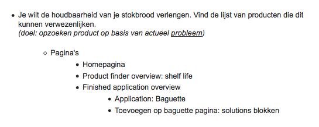
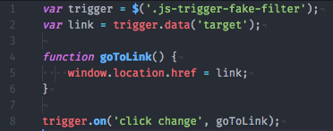
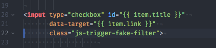
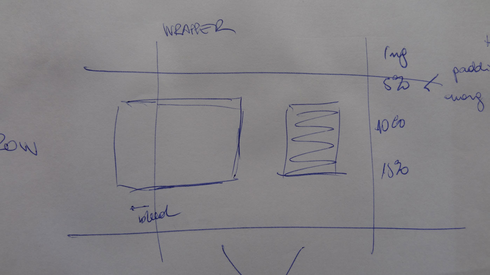
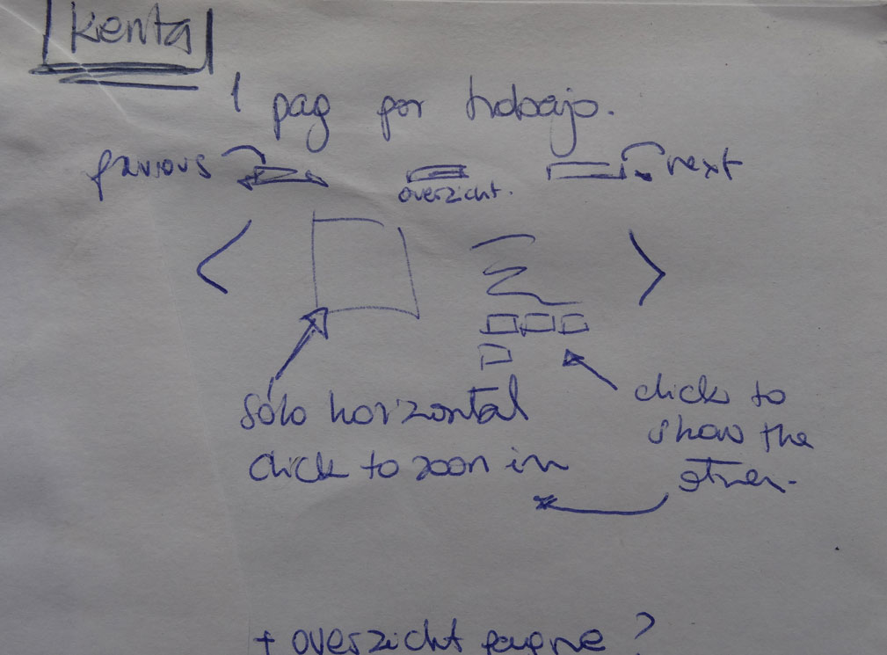
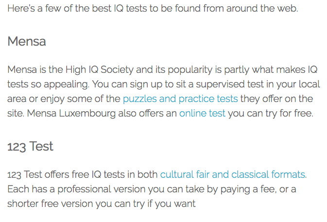
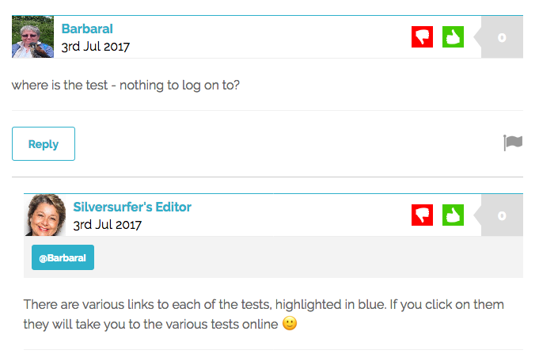
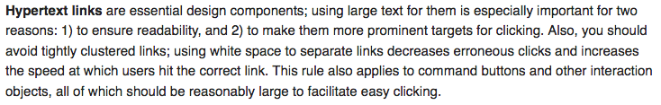

3 Cases
- Puratos.
- Javascript aanpassingen vóór de User Tests.
- Kenta Takeshige.
- Vanuit een pen+papier lo-fi prototype naar een ontwerp in de browser.
- Custom.
- Mijn aanpak voor de oplossing van een usability probleem.
case 1
Puratos

Puratos


case 2
Kenta Takeshige
Vanuit balpen en papier ...


... naar een ontwerp in de browser
case 3
Custom Case: Silversurfer


Quote van de experts: Nielsen Norman Group

https://www.nngroup.com/articles/usability-for-senior-citizens/Solution 1
Iconen naast de link + onderstrepen on hover
fabian2vrt.localtunnel.me/oplossing-1
Solution 2
Cards onderaan (als links)
fabian2vrt.localtunnel.me/oplossing-2
Solution 3
Links ondertreept highlighted on hover
fabian2vrt.localtunnel.me/oplossing-3
Bedankt Gitte en Astrid, voor jullie tijd.